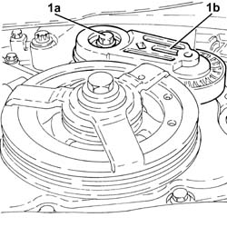
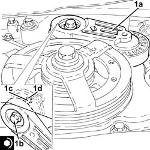
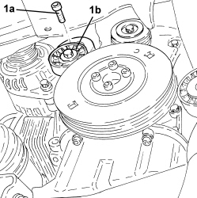
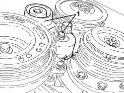

1092G14 ENGINE COMPONENT SINGLE BELT MOVING TENSIONER - R + R
- Path
- Procedures > 10 ENGINE > 1092 ENGINE COMPONENT MISCELLANEOUS DRIVES > 1092G SINGLE DRIVE BELT FOR VARIOUS ENGINE COMPONENTS > 1092G14 ENGINE COMPONENT SINGLE BELT MOVING TENSIONER - R + R
- Kind
- repair procedure (removal / refitting; the operation number is the code)
- Applies to
- engines: 1.8, 2.2, 1.9 JTD 8v, 1.9 JTD 16v; all production periods
- Interactive page
- https://sloeber94.github.io/elrnDB-fCrm/en/#/194000422
Applies to: engines: 2.2; all production periods
 Removing
Removing
 Refitting
Refitting- Position the vehicle on a lift.
Op. 4450B04 RIGHT FRONT WHEEL - R.R
Op. 7055B66 ENGINE COMPARTMENT DUST COVER IN RIGHT FRONT WHEEL ARCH - R.R.
Op. 1092G10 SINGLE ENGINE BELT - R.R
1. Undo the bolt (1a) and remove the engine components single belt moving tensioner (1b).

Applies to: engines: 2.2; all production periods
Refitting
Removing1. Position the auxiliary drivebelt moving tensioner (1a) in its housing and secure it tightening the bolt (1b) to the recommended torque.
Component | Fastening | dia | Value (daNm) | Validity |
|---|---|---|---|---|
Engine components single belt moving tensioner | Bolt | M10 x 1.5 | (engine crankcase side) 4.3 | 2.2 |

Applies to: engines: 2.2; all production periods
Op. 1092G10 SINGLE ENGINE BELT - R.R
Op. 7055B66 ENGINE COMPARTMENT DUST COVER IN RIGHT FRONT WHEEL ARCH - R.R.
Op. 4450B04 RIGHT FRONT WHEEL - R.R
- Remove the vehicle from the lift.
Applies to: engines: 1.9 JTD 8v, 1.9 JTD 16v; all production periods
Removing
Refitting- Position the vehicle on a lift.
Op. 4450B04 RIGHT FRONT WHEEL - R.R
Op. 7055B66 ENGINE COMPARTMENT DUST COVER IN RIGHT FRONT WHEEL ARCH - R.R.
Op. 7055B91 RIGHT FRONT WHEEL ARCH LINER - R.R.
Op. 1092G10 SINGLE ENGINE BELT - R.R
- Adjust the mobile tensioner with a wrench until the pin used for locking it can be withdrawn.
1. Undo the bolt (1a) and remove the engine components single belt moving tensioner (1b).

Applies to: engines: 1.9 JTD 8v, 1.9 JTD 16v; all production periods
Refitting
Removing- Position the engine components single belt moving tensioner in its housing and secure it tightening the bolt to the recommended torque.
Component | Fastening | dia | Value (daNm) | Validity |
|---|---|---|---|---|
Engine components single belt moving tensioner | Bolt | M10x1.5 | 5.0 | 1.8 1.9 JTD 16v 1.9 JTD 8v 2.4 JTD 20v |
- Lock the mobile tensioner so that the belt is slack by inserting a suitable pin (5mm diameter).
Op. 1092G10 SINGLE ENGINE BELT - R.R
Op. 7055B91 RIGHT FRONT WHEEL ARCH LINER - R.R.
Op. 7055B66 ENGINE COMPARTMENT DUST COVER IN RIGHT FRONT WHEEL ARCH - R.R.
Op. 4450B04 RIGHT FRONT WHEEL - R.R
- Remove the vehicle from the lift.
Applies to: engines: 1.8; all production periods
Removing
RefittingOp. 1092G10 SINGLE ENGINE BELT - R.R
1. Undo the fixing bolt and remove the engine components single belt moving tensioner.

Applies to: engines: 1.8; all production periods
Refitting
Removing- Position the auxiliary drive belt moving tensioner in its housing and secure it tightening the bolt to the recommended torque.
Component | Fastening | dia | Value (daNm) | Validity |
|---|---|---|---|---|
Engine components single belt moving tensioner | Bolt | M10x1.5 | 5.0 | 1.8 1.9 JTD 16v 1.9 JTD 8v 2.4 JTD 20v |
Topics linked from this page (4)
- 1092G10 SINGLE ENGINE BELT - R.R
- 4450B04 RIGHT FRONT WHEEL - R.R
- 7055B66 ENGINE COMPARTMENT DUST COVER IN RIGHT FRONT WHEEL ARCH - R.R.
- 7055B91 RIGHT FRONT WHEEL ARCH LINER - R.R.
Topics that link to this page (11)
- 1016C10 SINGLE CYLINDER HEAD - R.R. AND REPLACE GASKET
- 1020D14 FRONT CRANKSHAFT OIL SEAL COVER - R.R AND REPLACE SEALS FOR VERSIONS WITH OIL PUMP ON CRANKSHAFT, TIMING SIDE
- 1028H20 PISTON WITH CONNECTING ROD - R.R
- 1032B10 TOOTHED TIMING BELT - R + R FOR TIMING ADJUSTMENT OR REPLACEMENT
- 1032B46 TOOTHED DRIVE PULLEY - R + R
- 1032C18 TIMING BELT MOVING TENSIONER - R.R.
- 1032C41 TIMING SYSTEM FIXED CHAIN TENSIONER PAD R R
- 1032D27 TIMING SYSTEM FRONT PROTECTIVE COVER (LOWER PART) - R.R.
- 1036C41 PHASE TRANSFORMER ON OVERHEAD CAMSHAFT (ONE) INTAKE EXHAUST ON CYLINDER HEAD - R.R.
- 1036C42 VARIABLE VALVE TIMING SYSTEM ON INTAKE EXHAUST CAMSHAFT IN CYLINDER HEAD R R
- 1092G15 ENGINE COMPONENT SINGLE BELT MOVING TENSIONER - R.R. WITH BELT REMOVED